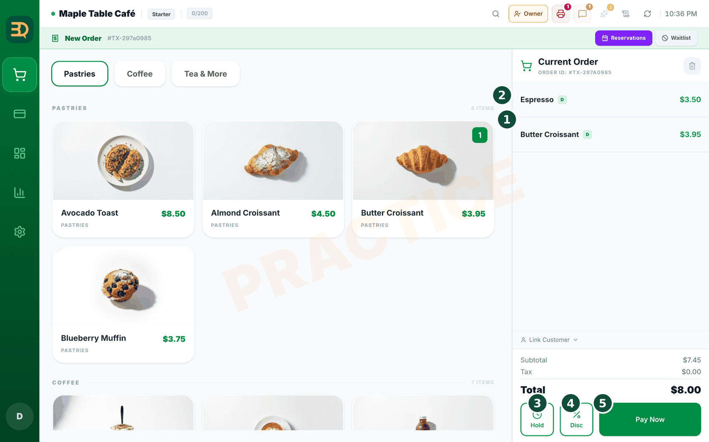
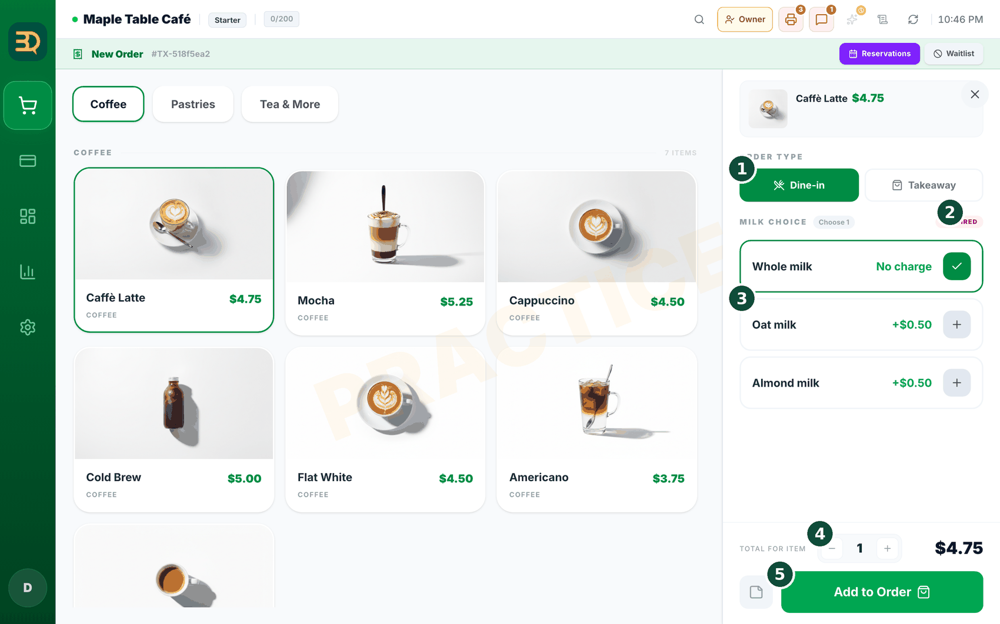
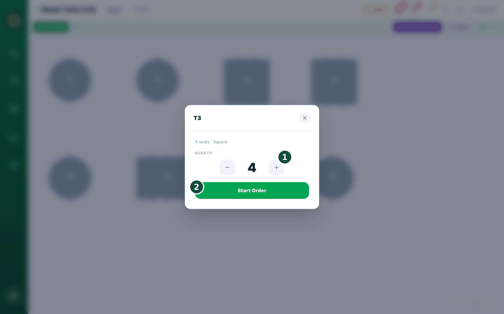
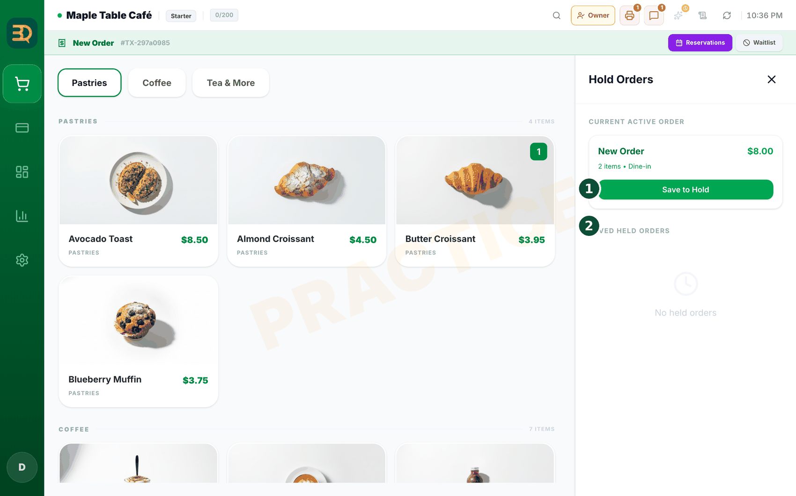
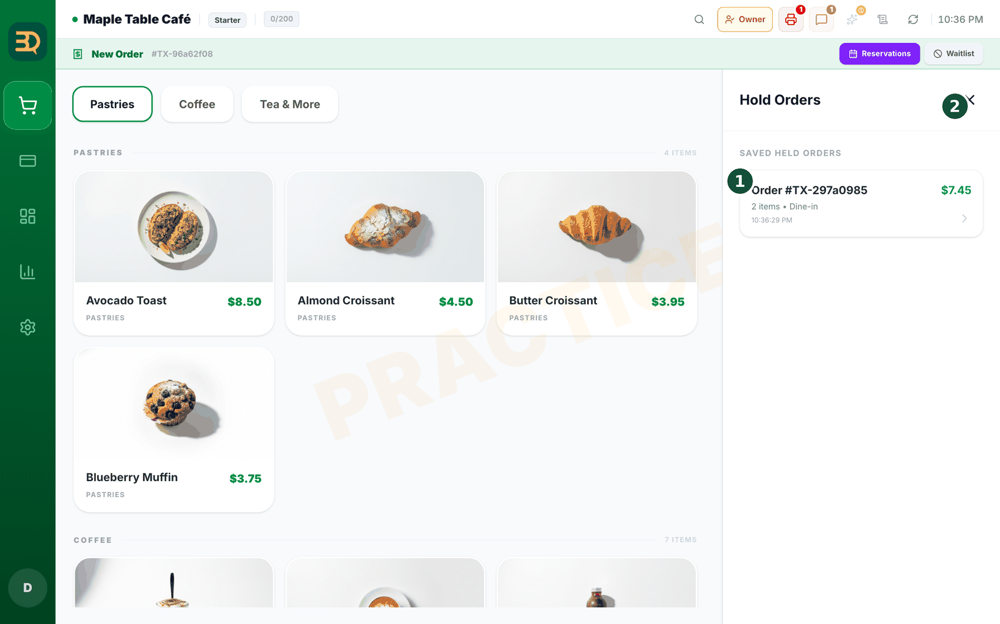

6点单
点单是最主要的工作。柜台式店铺和桌台式店铺的操作略有不同，请在下面找到适合您的部分。



- 如果您在柜台服务：点击顾客想要的每个商品，它会进入屏幕侧边的订单中。
- 再次点击同一商品可以增加数量，数字会随之增加。
- 订单完成后，点击 Pay Now（立即支付）收款。

- 如果您在餐桌服务：打开桌台图（您店面的平面图），点击顾客就座的餐桌，即可开始他们的订单。
- 用同样的方式添加他们的商品，逐个点击即可。
- 需要给厨房留特别备注？点击该商品，然后添加商品备注，例如“特别热”或“不加冰”。
- 需要先暂停、稍后再回来？点击 Hold（挂单）。订单会被保存，您随时可以重新打开它（见下方“挂单”）。
外带？外带订单（打包带走的餐食）与桌台订单分开存放，绝不会混在一起。
挂单
把订单暂存，稍后再处理。有时您无法立刻完成一个订单，比如顾客暂时走开，或者来了新的顾客。Hold（挂单）可以让您暂存订单，稍后再回来处理。不会产生任何扣款，也不会丢失任何内容。
- 看订单面板的底部，您会看到 Hold 按钮，就在 Disc（折扣）旁边。

- 点击 Hold。订单被暂存，不会向任何人收费。屏幕会清空，方便您服务下一位顾客。
- 在餐桌上挂单时，被挂起的订单仍与该餐桌关联，便于再次找到。

- 要取回订单，请打开挂单列表，点击该订单即可恢复。
- 订单会恢复成您离开时的样子。您可以继续添加商品，然后继续 Pay Now。
什么时候该用挂单？顾客暂时走开去拿东西，或您需要先处理别人的订单时，都可以使用。暂存的订单会安全地等到您准备好，不会丢失任何内容。
绘制桌台图
如果您在餐桌服务，桌台图就是您店内空间的一幅小地图。点击某张餐桌即可开始该桌的订单。它只需设置一次，下面介绍如何绘制。
在哪里开启
餐厅和酒吧业态默认开启桌台服务。其他业态请在 Settings › Add-ons › Tables 中开启（拨动开关）。只有开启桌台服务后才会显示桌台图。
开始之前：请确认已开启桌台服务（见上方提示框）。


- 打开 Table Map（桌台图）：点击左侧边栏的 Tables（桌台）。（仅在开启桌台服务时显示。）
- 点击顶部 Table Map 标签旁的齿轮图标（Edit Layout，编辑布局）进入编辑器。如果您还没有任何餐桌，也可以点击屏幕中间的 Open Editor（打开编辑器）按钮。您将在这里搭建自己的店内布局。
- 在顶部工具栏中点击想要添加的形状：Round（圆形）、Square（方形）、Rect（长方）或 Wall（墙壁），以及 Counter（柜台）、Door（门）和 WC（洗手间）。新的餐桌（或设施）随即出现。
- 点击刚添加的餐桌，右侧会打开编辑面板。设置它的 Name（名称，如“T1”或“露台 3”）、Seats（座位数）、Shape（形状）、Size（大小）和 Color（颜色），然后点击 Done。您选择时会看到餐桌随之变化。
- 将餐桌拖到它在店内的实际位置。
- 对每张餐桌重复以上操作。
- 完成后，点击左上角的 Table Map（返回）按钮回到桌台图。现在您可以点击餐桌开始堂食订单了。
不必太过计较。地图不需要十分完美，只要您能分清各张餐桌就可以了。您随时可以调整餐桌位置。
移动与合并餐桌
通过拖放来移动和合并。顾客有时会改变主意，比如想换到露台，或者两桌决定一起结账。在桌台图上，您可以把一张餐桌的整个订单拿起来放到别处，无需重新输入任何内容。
在哪里找到
此功能内置于桌台图中。只要开启了桌台服务就可以使用，无需额外开启任何设置。
把订单移到空桌
- 按住一张有订单的餐桌片刻，直到它浮起，然后将它拖到一张空桌上松手。
- 弹出一个小窗口询问 "Move T1 to T3?"（将 T1 移到 T3？），点击 Move（移动）。整个订单会跳到新餐桌，原餐桌变为空桌。餐桌名称不会改变。
把两张有订单的餐桌合并成一张账单

- 按住一张有订单的餐桌，然后将它拖到另一张有订单的餐桌上。
- 此时窗口标题变为 "Move T1 onto T2?"（将 T1 并入 T2？），Move 选项变灰（“Move unavailable”，无法移动），并出现一张 Merge（合并）卡片：“T1 + T2 into one order on T2.”（T1 + T2 合并为 T2 上的一个订单。）点击它。两个订单会合并为您拖放到的那张餐桌上的一张账单，另一张餐桌则变为空桌。
拖错了餐桌？移动或合并之后约 6 秒内会弹出 Undo（撤销）按钮，点击即可将一切恢复原状。（合并后如果已在合并账单上添加了新商品或已收款，则无法撤销合并。）
值得展示
一根手指就能挪动整桌客人。多数收银系统要求您作废订单、再重新录入才能换桌。BrewDesk 只需轻轻一滑就能挪过去，而且 6 秒撤销功能让手滑也不会丢掉一单生意。
须知：拖放到已预订的餐桌上时，系统会先提醒您。合并后的账单会保留主餐桌的折扣，每张餐桌仍是一张清晰的订单。
餐桌显示占用却没有订单？有时餐桌被打开（例如被 QR 扫码打开）却没有下单，因此一直显示为占用。点击地图上的这张餐桌，BrewDesk 会提供清除（整理回空桌）或开启新订单的选项。只有当餐桌上没有订单也没有付款时才能清除，所以您绝不会丢失任何一笔真实的销售。